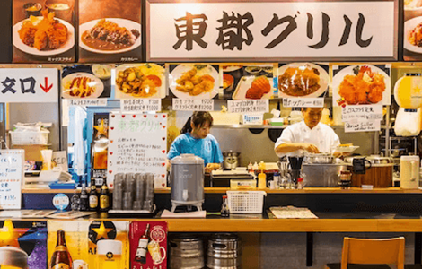
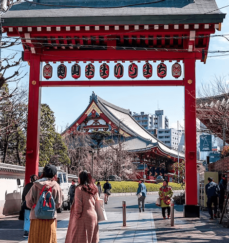
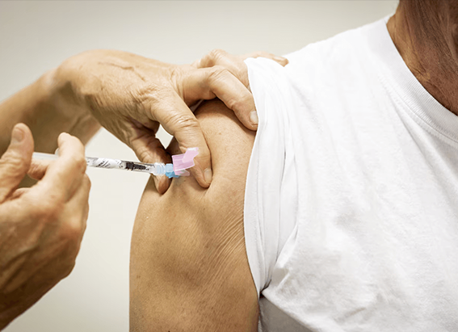
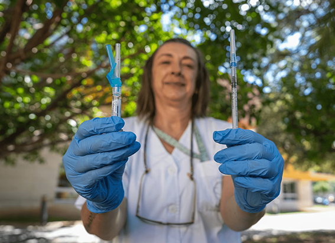

NATIONAL GEOGRAPHIC
A culinary guide to Tokyo
TRAVEL
- 
- 
Exciting things continue to happen in Tokyo’s dining scene. In the 2023 Michelin Guide to the Japanese capital, 200 restaurants were awarded at least one star more than in Paris and New York combined. Of those, 12 come with lofty three-star status, including chef Seiji Yamamoto’s artistic kaiseki (multi-course) menu at RyuGin and the Edo-style sushi at Masahiro Yoshitake’s Sushi Yoshitake.
British chef Daniel Calvert himself no stranger to a Michelin stars described working in the city as ‘every chef’s dream’ when he launched his restaurant Sézanne at the Four Seasons Hotel Tokyo at Marunouchi in 2021. And he’s not the only one who thinks this way: Virgilio Martinez and Massimo Bottura are also among the acclaimed international chefs to have opened outposts here in recent years.
Yet, for all its fine dining finesse, Tokyo’s culinary scene is just as much about the joy of casual, everyday dishes. Three ramen joints Ginza Hachigo, Konjiki Hototogisu and Nakiryu have been awarded a Michelin star each, while a couple of hundred Bib Gourmand awards give a deserved nod to good-value comfort food such as soba noodles, tonkatsu cutlets and kare raisu (curry and rice). The latter, a weeknight staple in many homes, is thought to have arrived with the Japanese Imperial Navy, who may have encountered an adulterated version of Indian curries being eaten by British sailors.
Meanwhile, to sample a dish that’s little-known outside of Japan, pay a visit to the Ryogoku neighbourhood for chanko-nabe, the hearty hotpot eaten in large quantities by sumo wrestlers looking to bulk up. Or head to the Tsukishima district to try grilled monjayaki the runny batter might not look appetising when first poured onto the hotplate, but it turns into a wonderfully addictive, savoury goo.
Beyond dining, Tokyo is also a great drinks destination, home to inventive mixologists like Hiroyasu Koyama, of Bar Benfiddich, and Shingo Gokan, of The SG Club. There’s also a well-established craft beer scene, which has a habit of adding a Japanese accent to imported styles (a hint of yuzu in a weissen, perhaps, or the numbing tingle of sansho pepper in a golden ale), internationally acclaimed whisky and, of course, sake, brewed using centuries-old techniques.
Tapas Molecular Bar
The tapas-inspired fusion at this eight-seat counter restaurant in Mandarin Oriental, Tokyo lies somewhere between art and a science experiment. The menu changes seasonally but can include imaginative creations like smoked barbecue pork and sesame ash designed to look like a smouldering cigar.
RyuGin
Seiji Yamamoto’s artful take on refined kaiseki-ryori (Japan’s haute cuisine) has earned three Michelin stars for his restaurant, located in the smart Tokyo Hibiya Midtown complex. The menu is omakase, meaning guests leave it up to the chef to decide on the array of small dishes served.
Sushi Yoshitake
Technique and the finest produce play a major role at chef Masahiro Yoshitake’s three-Michelin-starred sushi restaurant. But so too does inventiveness: the nigiri rice is seasoned with red vinegar (rather than the usual white rice vinegar) and highlights include steamed abalone with a liver and sea urchin sauce.
The SG Club
Named one of the World’s 50 Best Bars, this Shibuya spot is spread across two floors. Upstairs, Guzzle offers drinks such as gin and tonic infused with condensed beer; downstairs, speakeasy-styled Sip serves up creations like the signature tomato tree cocktail (above), combining gin, tomato, dill, elderflower and mastic.
Bar Benfiddich
Owner and mixologist Hiroyasu Kayama creates cocktails at this Shinjuku bar using foraged botanicals along with ingredients such as wormwood, yuzu and anise grown on his farm north of the capital. There’s no menu, but expect plenty of absinthe and lesser-known spirits from around the world.
Comments :
- john Very good
- john Very good
Leave a Reply
Your email address will not be published. Required fields are marked*
Related posts:
-
Why does COVID-19 cause brain fog Scientists may finally have an answer.
When scientists infected brain organoids pinhead-size bits of brain tissue grown in the lab with the virus that causes COVID, they found that not only does it spread in neurons in the brain, it also accelerates
View article -
It’s good to feel bad after your COVID shot
Jeremy Warner has had six shots of the COVID vaccines. He’s an oncologist at Brown University in Providence, Rhode Island, where he treats immunocompromised patients with cancer who are especially vulnerable
View article -
Why the new COVID shot is a game-changer (and why the term ‘booster’ is obsolete)
Developed by Pfizer-BioNTech and Moderna and approved on September 11 by the U.S. Food and Drug Administration (FDA), the new COVID vaccines have arrived just as the latest strain of the virus is causing
View article